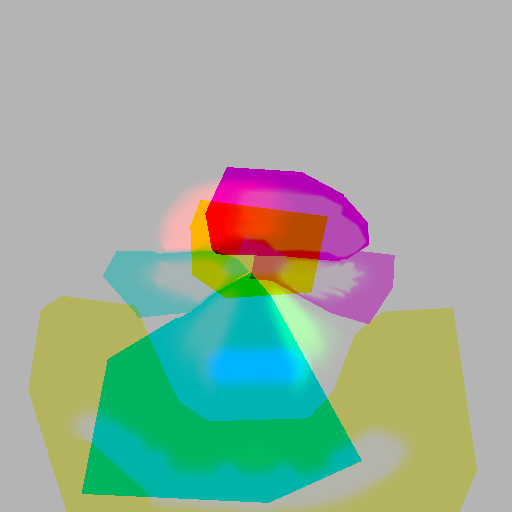
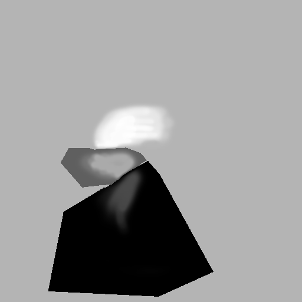
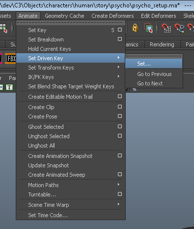
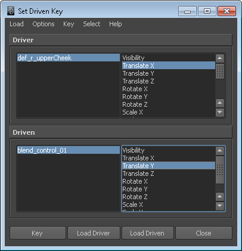
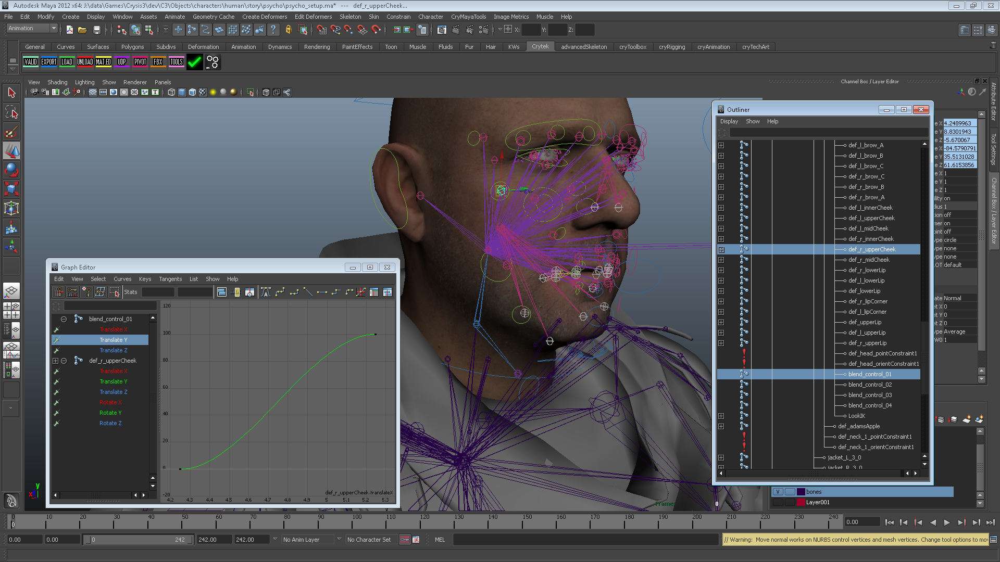
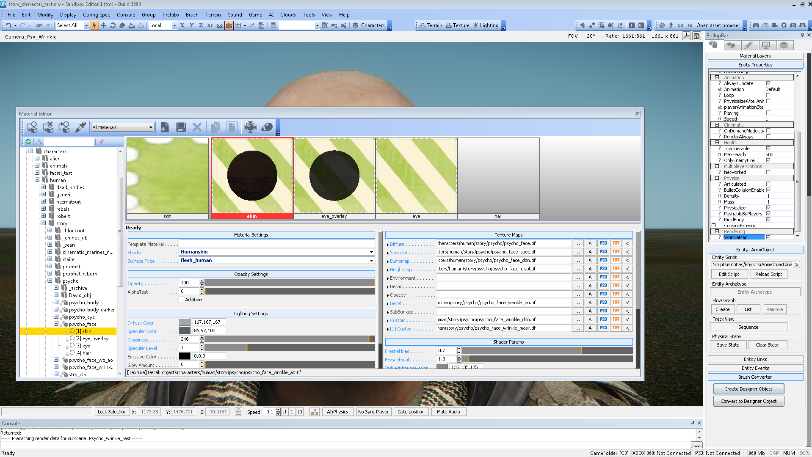
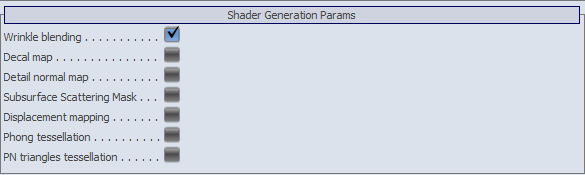
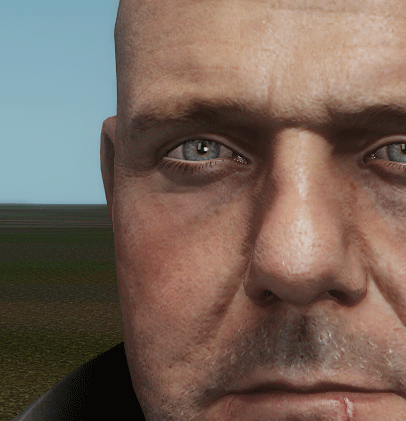

Обзор
Разделы
Текстура, используемая для определения областей и диапазонов морщин, представляет собой обычный 32-битный файл .tif, включая альфа-канал.
Различные каналы: красный, зеленый, синий и альфа-канал были разделены на диапазоны, так что более 3 или 4 каналов могут обрабатываться независимо и воздействовать на разные области лица.
На данный момент это «жестко запрограммировано». Использование более чем этих трех каналов на канал карты приведет к необходимости внесения изменений в код.
Различные диапазоны равномерно распределены по каналам от 0 до 255 с интервалом 20 между первым и вторым диапазонами и интервалом 10 между вторым и третьим диапазонами, чтобы предотвратить смешивание каналов друг с другом.
Ниже показана полученная текстура без альфа-канала, а справа — красный цвет, преобразованный в оттенки серого:


Связь между цветовыми диапазонами и оснасткой
В таблице ниже показано, как различные узлы и свойства соединяются друг с другом от текстуры через риг в движке.
Обратите внимание, что эти соединения совершенно произвольны и могут быть изменены в соответствии с конкретными потребностями.
Совместное название | Совместное название | Совместный параметр | Цветовой канал | Диапазоны уровней | Область влияния | Риг-Контроль |
|---|---|---|---|---|---|---|
сустав0 | blend_control_01 | перевод х | красный 0 | 0 - 75 | Правый рот и носогубная складка | def_r_lipCorner (з транс) |
сустав1 | blend_control_02 | перевод х | зеленый 0 | 0 - 75 | Левый лоб | def_l_brow_B (з транс) |
сустав2 | blend_control_03 | перевод х | синий 0 | 0 - 75 | Глабелла | def_midbrows (и транс) |
сустав3 | blend_control_04 | перевод х | альфа 0 | 0 - 75 | под челюстью | Jaw_control (x Рот) |
Настройка приводной кости в Maya
Соединения из таблицы в предыдущей главе были реализованы посредством настройки управляемого ключа в Maya.
На основе различных существующих анимаций были выбраны определенные кости из установки для управления каждым конкретным свойством путем сопоставления их движения с диапазоном от 0 до 100 единиц соответствующего blend_bone.
После краткого описания настройки Driven Key в Maya:
Чтобы открыть Диалог, используйте меню, представленное на картинке ниже:

Откроется диалоговое окно настройки управляемого ключа, в котором настраиваются соединения между ведущим и ведомым узлами, а также устанавливаются нужные значения.

В этом примере, согласно таблице из предыдущей главы, связь установлена между локальным значением преобразования x def_r_upperCheek и отображается в диапазон от 0 до 100 преобразования y blend_control_01.
Ниже приведен пример одного соединения и связанной с ним кривой, с помощью которой отображается движение ведущей кости.

Настройка шейдера
На картинке ниже вы можете увидеть обзор того, как каждую карту нужно применять в материале.

Обратите внимание, что в правой части изображения, где находятся свойства анимационного объекта, необходимо установить флаг «WrinkleMap» в разделе «Рендеринг», чтобы затенение морщин работало.
Кроме того, в разделе «Параметры генерации шейдеров» внутри материала необходимо проверить «Смешение морщин»:

Вот пример из двух кадров (анимированный gif), на котором показано, как blend_bone управляет «гусиными лапками», не деформируя окружение, чтобы сделать эффект более заметным.
